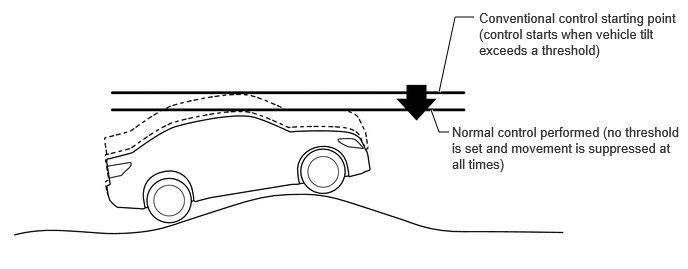
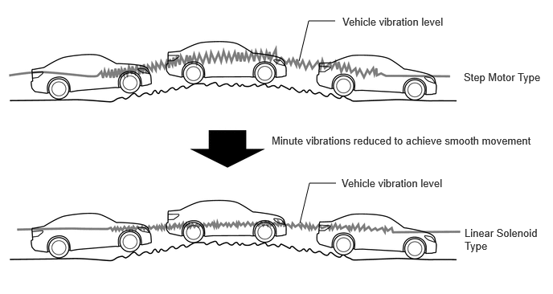

| Last Modified: 10-07-2025 | 6.11:8.1.0 | Doc ID: NM100000002H1YC |
| Model Year Start: 2024 | Model: Tacoma | Prod Date Range: [12/2023 - ] |
| Title: SUSPENSION CONTROL: ADAPTIVE VARIABLE SUSPENSION SYSTEM: GENERAL; 2024 - 2026 MY Tacoma Tacoma HV [12/2023 - ] | ||
GENERAL
OUTLINE
(a) An Adaptive Variable Suspension system (AVS) is used.
(b) The AVS controls the damping force of the shock absorber according to driving operations and road conditions, achieving superior steering response, stability (flat and stable drive) and a stable and comfortable ride.
(c) The linear solenoid type absorber control actuators switch the damping force, achieving fine-grained control.
(d) The AVS damping force control system consists of vehicle speed sensing control which performs control according to driving operations, anti-pitch control, roll posture control, repercussion control (sprung speed proportional control) which performs control according to road conditions, roughness sensing control and unsprung damping control.
(e) The AVS system optimally controls the damping force through cooperative control together with the brake control system and pre-collision safety system.
(f) A mode switching function is provided, which makes it possible to select the damping force control mode by performing drive mode select operations.
(g) L4 drive mode control is provided. In the L4 drive mode, riding comfort and driving performance during off-road driving are ensured by optimally controlling the damping force for off-road driving.
MAIN FEATURES
(a) The AVS system achieves higher levels of flatness and riding comfort by introducing "Repercussion Control (sprung speed proportional control)" to fully utilize the linear solenoid type damping force variable shock absorber. Also, the linear solenoid type damping force variable shock absorber quickly and smoothly performs fine-grained control to switch the damping force. As a result, control is performed much more frequently and control of higher frequencies is made possible.
(b) Flat feeling in normal range
(1) The system constantly controls the damping force using the characteristics of the linear solenoid type damping force variable shock absorber in an effort to stop both large and small vehicle movements. As a result, the system can ensure a flat vehicle posture for most road surfaces and driving conditions.
(c) Flat feeling even on complex road surfaces
(1) The system appropriately controls the damping force using the characteristics of the linear solenoid type damping force variable shock absorber during each moment that the vehicle travels over minute variations in the road surface. As a result, large vehicle movements are suppressed while rough shocks are reduced to achieve a flat and smooth riding comfort, even on complex road surfaces (general surfaces with large unevenness together with minute variations) where effective control could not be fully achieved with the conventional step motor type.
